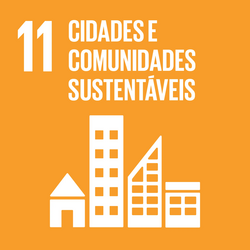
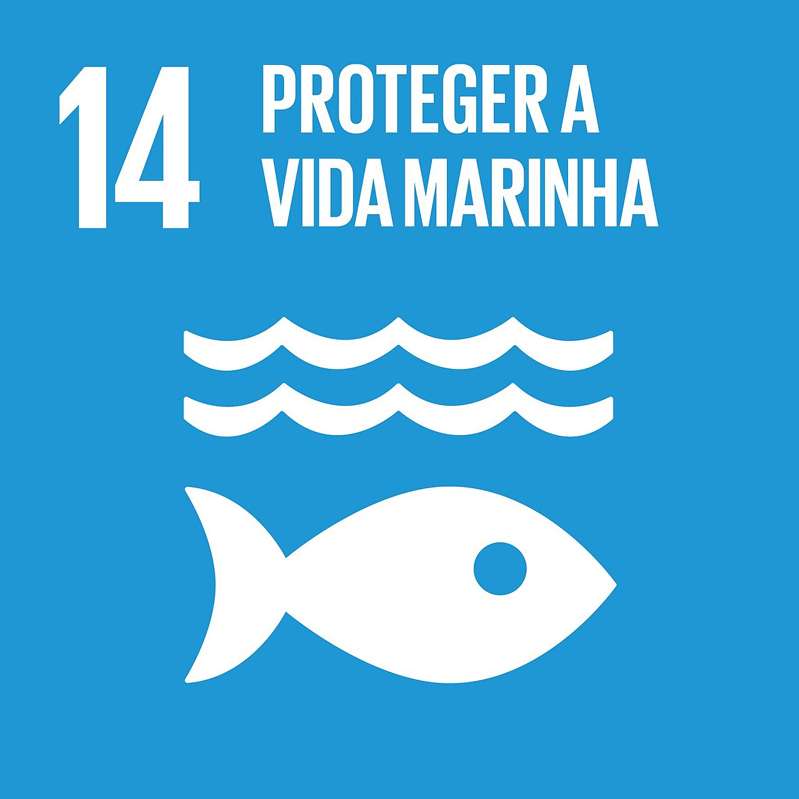
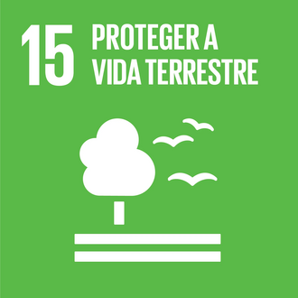

Projeto de Ano Letivo do Senac Lapa-Tito, curso Técnico em Informática.
O projeto nasceu de uma discussão sobre como a tecnologia pode ajudar a resolver problemas urbanos de São Paulo. A partir daí, o grupo se dedicou ao descarte irregular de lixo eletrônico — um problema que cresce a cada ano e que, na Zona Leste da cidade, atinge o bairro Itaquera com mais força do que em outras regiões. O EcoPonto Digital existe para tornar mais simples encontrar onde descartar esse material corretamente.
O projeto está alinhado a três Objetivos de Desenvolvimento Sustentável da ONU:

ODS 11 — Cidades e comunidades sustentáveis
ODS 14 — Proteger a vida marinha
ODS 15 — Proteger a vida terrestreAlunos do 2º ano do Ensino Médio Técnico, turma EMED, Senac Lapa-Tito.